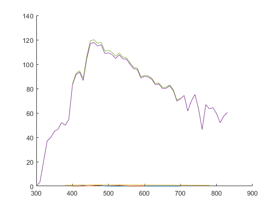

LinInterpolAdd4Async
Navigate to: Home | Alphabetic list | Grouped list | Source code: LinInterpolAdd4Async.m
From four tabulated functions yy0(xx0) ... yy3(xx3), compute the sum of the four interpolated functions over the same query grid xq, using four processors in parallel
Contents
Syntax
yq = LinInterpolAdd4Async(xx0,yy0,xx1,yy1,xx2,yy2,xx3,yy3,xq)
Input Arguments
- xx0: double vector, array of x values. Must be strictly ascending and have at least length 2 (unchecked preconditions).
- yy0: double vector, array of function values. Must have at least same length as xx0 (unchecked precondition); if longer, the excess values are ignored.
- xx1, xx2, xx3: same as xx0 for the other three functions
- yy1, yy2, yy3: same as yyx0 for the other three functions
- xq: double vector, array of query values. Must be strictly ascending if length > 1
Output Arguments
- yq: double vector, same length as xq, the sum of values the four individual interpolated functions at xq
Algorithm
Computes the same result as Matlab's interp1(xx0, yy0, xq, 'linear', 0) + interp1(xx1, yy1, xq, 'linear', 0) + interp1(xx2, yy2, xq, 'linear', 0) + interp1(xx3, yy3, xq, 'linear', 0). (In fact, the routine forwards to precisely this call if the platform is not a Windows PC or if the routine is used in Gnu Octave). On a Windows PC under Matlab, the call is forwarded to a C++ DLL (see the LinInterpol subdirectory for the Visual Studio c++ project and source code). In the DLL, multithreading is used. This function may be faster than the synchronous call to LinInterpol(xx0,yy0,xq) + ... + LinInterpol(xx3,yy3,xq), depending on hardware.
See also
Usage Example
function ExampleLinInterpolAdd4Async() s1 = GaussSpectrum(400:700, 450, 20); s2 = GaussSpectrum(400:20:600, 500, 30); s3 = PlanckSpectrum(380:5:780, 5600); s4 = CIE_Illuminant('D65'); golden = (1 + sqrt(5)) / 2; % a very irrational number xq = 400:golden:700; sum = LinInterpolAdd4Async(s1.lam, s1.val, s2.lam, s2.val, s3.lam, s3.val, s4.lam, s4.val, xq); figure(); clf; hold on; plot(s1.lam, s1.val); plot(s2.lam, s2.val); plot(s3.lam, s3.val); plot(s4.lam, s4.val); plot(xq, sum); drawnow; % pause(2); n = 5000; % run some calls to initialize for i = 1:100 dum = LinInterpolAdd4Async(s1.lam, s1.val, s2.lam, s2.val, s3.lam, s3.val, s4.lam, s4.val, xq); dum2 = LinInterpol(s1.lam, s1.val, xq) + LinInterpol(s2.lam, s2.val, xq) + LinInterpol(s3.lam, s3.val, xq) + LinInterpol(s4.lam, s4.val, xq); end tic for i = 1:n dum2 = LinInterpol(s1.lam, s1.val, xq) + LinInterpol(s2.lam, s2.val, xq) + LinInterpol(s3.lam, s3.val, xq) + LinInterpol(s4.lam, s4.val, xq); end t_sync = toc; fprintf('LinInterpol: %g seconds per call\n',t_sync / n); tic for i = 1:n dum = LinInterpolAdd4Async(s1.lam, s1.val, s2.lam, s2.val, s3.lam, s3.val, s4.lam, s4.val, xq); end t_async = toc; fprintf('LinInterpolAdd4Async: %g seconds per call\n',t_async / n); end
LinInterpol: 3.66458e-05 seconds per call LinInterpolAdd4Async: 0.000156574 seconds per call